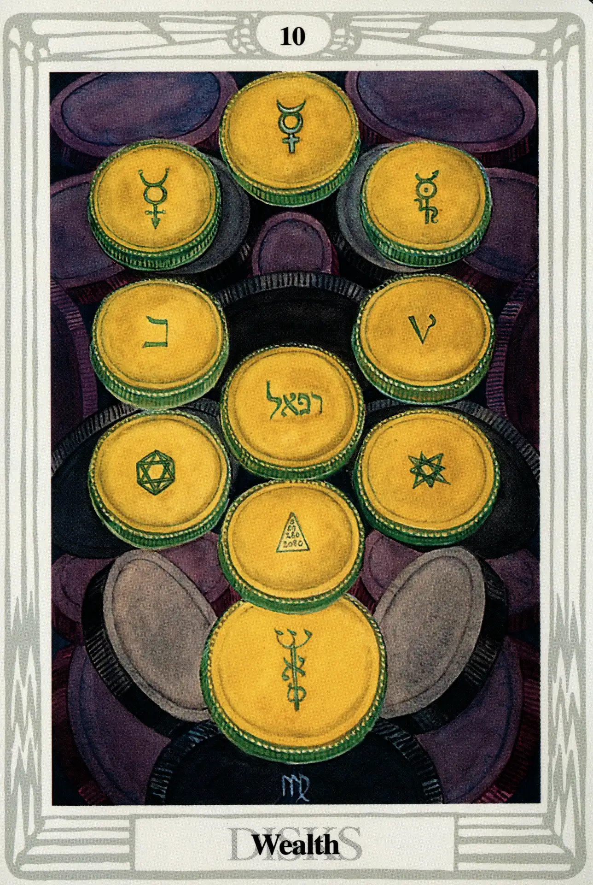

Disks
Ten of Disks
Wealth

(Mercury in Virgo)
20° to 30° Virgo
September 12 to September 22
Original Title: Lord of Wealth.
Golden Dawn Model: From clouds at the bottom of the card, a hand appears holding the branch of a rose tree whose roses touch all the disks. No buds, however, are shown. The disks are arranged thus:
Princess Scale for Malkuth: Black, rayed with Yellow.
The Four Scales for Mercury: Yellow; Purple; Grey; Indigo, rayed Violet.
The Four Scales for Virgo: Green (yellowish); Slate Grey; Green Grey; Plum color.
Formula: 10 (Malkuth) of Disks (Assiah) + Mercury in Virgo = WEALTH
The Ten of Disks represents the climax of the descent of matter and is the signal for the redintegration by spirit. Crowley calls this card “a hieroglyph of the cycle of regeneration.” It is, after all, the last tarot card. It represents the lowest sphere (Malkuth-Earth) of the lowest Qabalistic world (Assiah-the material plane). The tens of the other suits have somewhere to go. They simply cooperate with gravity and degenerate into the next lower suit. For the Ten of Disks, there is no place to descend, no place to grow, no place to go. The Ten of Disks is forced to do something that no other small card is called upon to do. From its position at the bottom of the cosmos, it has somehow to form a link with the secret of creation, then actually reincarnate fresh and new at the very top of the tarot cycle.
In other words, it must regenerate the world. That's some trick, and it's going to take the biggest trickster in the universe to help pull it off. But let's first take a look at the card.
Lady Harris's interpretation is almost comically poignant: a Tree of Life made entirely of massive and heavy coins, its Malkuth bulging at the bottom as if the forces and energies of all the tarot cards, all the sephiroth and paths, all the Qabalistic worlds have settled into it like the tired sediment of the entire universe. For lack of a more gentile allusion, this card is the portrait of cosmic constipation. A magical laxative will need to be administered to prevent this stagnant wealth of energy, experience, and matter from putrefying and poisoning the body.
Is there a doctor in the house?
Yes! The best doctor in the universe—the god of physicians and magicians, the god who, tradition informs us, invented the tarot—Thoth-Hermes-Mercury!
This is perfect! For a job like this, his credentials are amazing. First of all, as Mercury, the Magus, he knows his way around the supernal triad. (Remember that the path of Mercury is above the Abyss and joins Kether to Binah.) As Hermes, he descended to the lowest region of the Land of the Dead and returned to Olympus with Persephone to regenerate the cycle of seasons. If he could do that, jump-starting the Ten of Disks is going to be a piece of cake! His greatest credential is that he is Thoth—the inventor and sustainer of this entire tarot universe.
As if to attract Mercury's attention so that he may perform this most necessary magick, Harris painted this card as a veritable invocation of Material. All the sephiroth but one bear an image or word sacred to Mercury:
- Kether—we find the most common symbol of the planet Mercury;
- Chokmah—the symbol of Mercury as the Magus (Note that the right-angled positions of the arms are identical to the gesture made by the Magus in Atu I.);
- Binah—the symbol of alchemical Mercury;
- Chesed—the letter Pa, the Enochian equivalent of the letter “B” (Harris associated this with the Hebrew letter Beth which is assigned to Mercury);
- Geburah—the Hebrew letter Beth;
- Tiphareth—the name of Raphael (written in Hebrew), the ruling angel of Mercury;
- Netzach—the eight-pointed star of Mercury;
- Hod—the hexagram within the hexagon, symbol of the Sun (see below);
- Yesod—the Pythagorean Tetractys;
- Malkuth—the Mercurial caduceus made from the three mother letters of the Hebrew alphabet.
Why do all the sephiroth contain an image of Mercury except Hod, the sphere of Mercury itself? That is a very good question. Crowley mentions it as being the key to this remarkable regenerative process:
These disks are inscribed with various symbols of mercurial character, except that the coin in the place of Hod (Mercury) on the Tree is marked with the cipher of the Sun. This indicates the only possibility of issue from the impasse produced by the exhaustion of all the elemental forces.
I take this to mean that, at this stage of the game, Mercury needs inspiration and direction. Crowley said it most succinctly:
When wealth accumulates beyond a certain point, it must either become completely inert and cease to be wealth, or call in the aid of intelligence to use it rightly.…In this way, Carnegie establishes a Library, Rockefeller endows Research, simply because there is nothing else to do.
By plugging in the Sun in the sphere of Mercury, in a Tree of Life otherwise loaded with Mercury, Harris is calling in the aid of intelligence to give this card the spiritual integrity necessary to regenerate the world and become the ultimate cosmic philanthropist.
How I should like to do them all again.
—Harris to Crowley, date uncertain.